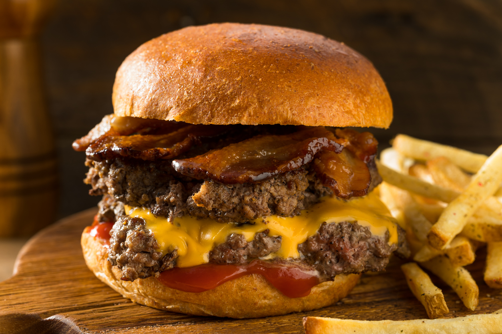

Home
Smash Burger

A delicious Classic Smash Burger featuring two thin, crispy-edged beef patties, melted American cheese, and caramelized onions on a toasted brioche bun.
Ingredients:
- 1/2 lb ground beef (80/20 fat ratio recommended);
- 2 brioche buns;
- 2 slices of American cheese;
- 1/2 yellow onion, thinly sliced;
- 2 tablespoons unsalted butter;
- Salt and black pepper to taste;
- Pickles and burger sauce (optional).
Steps:
- Prepare the meat: Divide the ground beef into 4 loosely packed balls (about 2 oz each). Do not press them yet.
- Toast the buns: Spread a little butter on the buns and toast them in a skillet over medium heat until golden brown. Set aside.
- Smash the patties: Increase the heat to high. Place the meat balls on the hot skillet. Use a heavy spatula (or a buger press) to smash them down as flat as possible.
- Season and add onions: Season the patties generously with salt and pepper. Place the thinly sliced onions directly on top of the raw side of the patties.
- Flip: Cook for about 2 minutes until the edges are crispy and browned. Flip the patties so the onions are now underneath, cooking into the meat.
- Add cheese: Place a slice of cheese on each patty and cook for another minute until melted.
- Assemble: Stack two patties on each toasted bun. Add pickles or sauce if desired.
- Serve: Enjoy your burger while it's hot and juicy!
Copyright © 2025 Joás Felipe. All rights reserved.